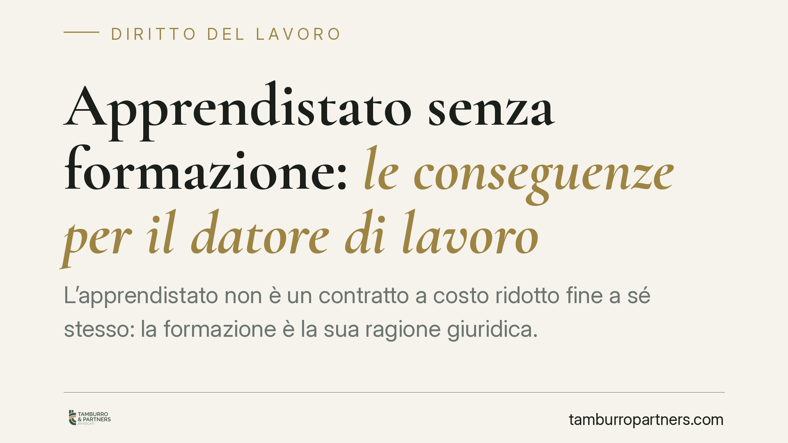

Apprendistato senza formazione: le conseguenze per il datore di lavoro
L'apprendistato non è un contratto a costo ridotto fine a sé stesso: la formazione è la sua ragione giuridica. Quando manca, il rapporto può essere riqualificato come lavoro subordinato ordinario, con recupero retributivo e contributivo a carico del datore. La Cassazione ha ribadito questo principio, da ultimo con la sentenza n. 6990/2025. Vediamo cosa rischia concretamente l'azienda.

Il fatto
L'apprendistato è un contratto di lavoro subordinato a tempo indeterminato caratterizzato da uno scambio preciso: il datore eroga una formazione professionale, in cambio beneficia di agevolazioni retributive e contributive. Il nodo è proprio questo scambio. Se la formazione non c'è, viene erogata solo sulla carta o è del tutto inadeguata, l'intero impianto perde la sua causa e il contratto può essere trattato come un normale rapporto subordinato.
La questione torna con regolarità davanti ai giudici del lavoro. La Corte di Cassazione, con la sentenza n. 6990/2025, ha confermato un orientamento già espresso (tra le altre, Cass. n. 275/2019): l'obbligo formativo è elemento essenziale e il suo inadempimento produce effetti pesanti sul piano retributivo e contributivo.
Inquadramento normativo
La disciplina è contenuta nel D.lgs. 81/2015. L'art. 42 individua la struttura del contratto di apprendistato e, al comma 1, ribadisce la natura di contratto a tempo indeterminato finalizzato alla formazione e all'occupazione dei giovani. L'art. 47 regola invece il regime sanzionatorio.
Il punto centrale è il comma 1 dell'art. 47: in caso di inadempimento nell'erogazione della formazione "di cui sia esclusivamente responsabile il datore di lavoro" e tale da impedire la realizzazione delle finalità del contratto, il datore è tenuto a versare la differenza tra la contribuzione versata e quella dovuta per un lavoratore di pari livello, maggiorata del 100%. Si tratta di una sanzione contributiva, non meramente amministrativa.
Accanto a questo, la giurisprudenza ha costruito la figura della riqualificazione: quando la carenza formativa è radicale, il rapporto viene considerato ab origine come lavoro subordinato ordinario a tempo indeterminato. Con una conseguenza diretta sul piano economico.
Implicazioni pratiche
Per il datore di lavoro le conseguenze si muovono su più fronti e tendono a sommarsi.
Riqualificazione del contratto. Il rapporto viene letto come subordinato pieno fin dall'origine. L'apprendista non va inquadrato nel livello di ingresso previsto per la formazione, ma nel livello contrattuale corrispondente alle mansioni effettivamente svolte.
Differenze retributive retroattive. Dalla riqualificazione discende l'obbligo di corrispondere le differenze tra quanto pagato e quanto sarebbe spettato a un dipendente ordinario di pari livello. Il recupero è retroattivo e copre l'intero rapporto, nei limiti della prescrizione.
Recupero contributivo. L'INPS può richiedere la contribuzione piena, venute meno le agevolazioni. A questo si aggiunge la maggiorazione del 100% prevista dall'art. 47 quando l'inadempimento formativo è imputabile al solo datore.
Sanzioni amministrative e ispettive. L'Ispettorato del lavoro può contestare irregolarità sul piano gestionale, in particolare sulla mancata predisposizione o attuazione del piano formativo individuale.
La prova gioca un ruolo decisivo. In sede di contenzioso, grava sul datore dimostrare di avere effettivamente erogato la formazione prevista. Un piano formativo redatto ma mai attuato non basta: ciò che conta è l'attività concreta.
Cosa fare in concreto
- Redigere un piano formativo individuale reale. Deve indicare contenuti, durata, modalità e tutor. Evitate modelli standard scollegati dalle mansioni effettive.
- Documentare la formazione svolta. Conservate registri di presenza, materiali, attestati, verbali del tutor. La documentazione è la prima linea di difesa in caso di accertamento.
- Nominare un tutor adeguato e verificarne l'attività. La figura del tutor non è una formalità: la sua mancata operatività è spesso il primo indizio di inadempimento.
- Monitorare le scadenze formative. Programmate le attività lungo l'intera durata del contratto, non concentrandole o rinviandole.
- Verificare la coerenza tra inquadramento e mansioni. Se l'apprendista svolge di fatto mansioni da lavoratore qualificato, il rischio di riqualificazione aumenta.
Consigliamo, nei rapporti di apprendistato in corso, un controllo periodico della documentazione formativa, così da intercettare eventuali criticità prima di un accertamento ispettivo.
Conclusioni
L'apprendistato resta uno strumento utile, ma il beneficio economico è legato in modo inscindibile all'erogazione effettiva della formazione. Trattarlo come un semplice contratto a basso costo espone l'azienda a conseguenze che, sommate, possono superare di molto il risparmio iniziale.
Disclaimer
Contributo informativo a cura di Tamburro & Partners - Avv. Giuseppe Tamburro. Non costituisce parere legale.
Ogni storia di lavoro ha i suoi tempi.
Se gestisci HR e vuoi un confronto su contenzioso, ispezioni o licenziamenti, scrivi allo studio. Ti rispondiamo entro un giorno lavorativo.